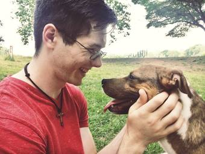
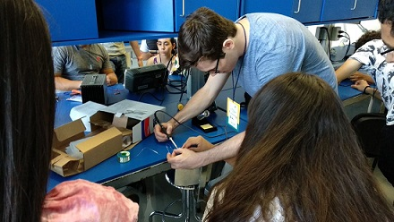
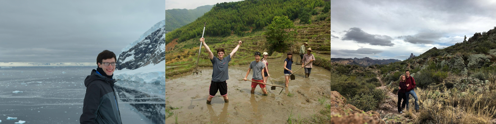
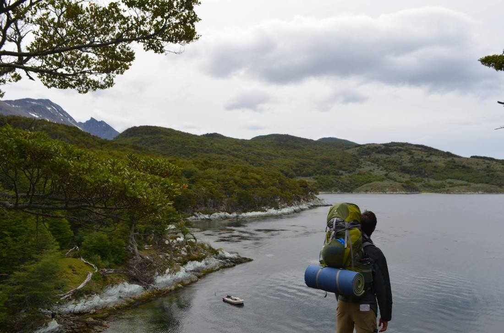

I am Nick Selby, and I am passionate about engineering that centers users and their communities. I have always wanted to "be an inventor when I grow up." I started my first company at age 18 coding and selling applications for graphing calculators to help high school and college students with their math homework. Since then, I have gotten to do research in quantum computing, build a solar-powered racecar, and travel internationally to teach students how to use engineering to improve their communities.
Watching someone's face light up in newfound comprehension delights me. I have had the privilege of teaching computer science, physics, and robotics courses at undergraduate and graduate levels, and was honored when my students' course evaluations ranked me in the 99th percentile of all instructors at Georgia Tech. My passion for teaching also helps me be a better leader. In my role as Director of Engineering for an African solar mini-grid company, I lead the engineering and construction of solar mini-grids across Africa. Often, this means teaching engineering analysis and power electronics operation to my employees and local technicians we hire. Regardless of where I work, I grow the knowledge base of my coworkers and teammates.
When I'm not building something, I enjoy public speaking, hiking, and traveling. Public speaking is my artistic outlet. The act of speaking to a crowd, be it professionally, motivationally, or theatrically, brings me joy. I have had the privilege of delivering presentations around the world to audiences that sometimes number in the thousands. Whatever the occasion, I am honored by the responsibility the stage gives me to teach, inspire, and delight.
Many of my favorite adventures happen while traveling. I've kayaked in Scotland, backpacked in Patagonia, farmed rice paddies in China, and mountaineered in Antarctica. After trekking through otherworldly landscapes, I further the adventure by enjoying the local cuisine—the spicier the better—and discussing culture, politics, and philosophy with people I meet. My goal is to develop a strong engineering skillset and collaborate with researchers and entrepreneurs around the world to solve problems at the community level.
Send me an email if you have an interesting project on which you would like to collaborate. I am always ready for another adventure.
